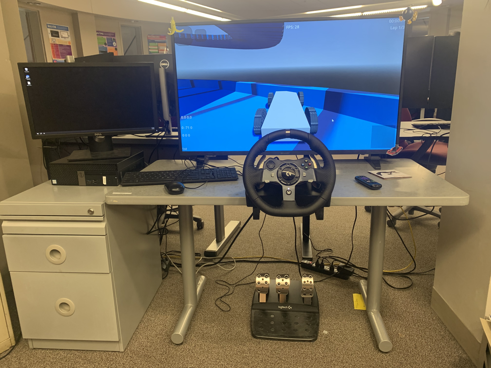
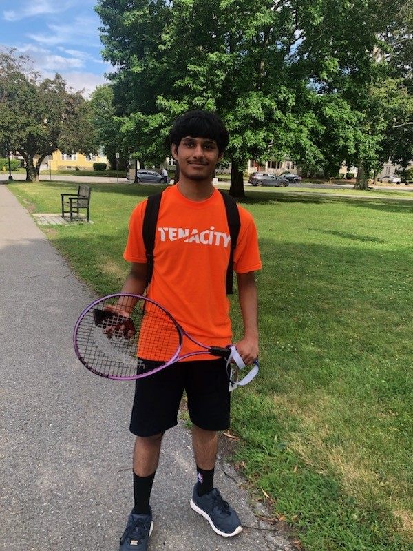
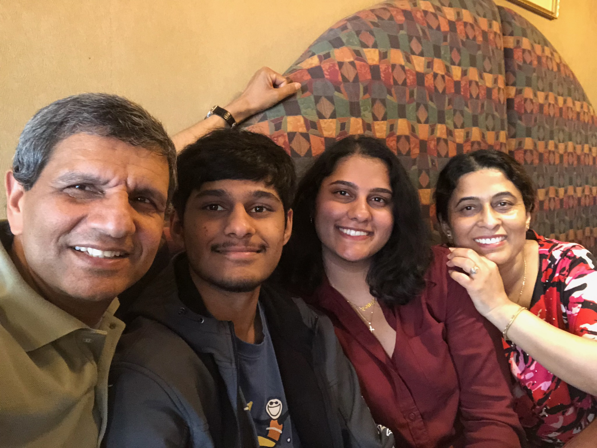

school_and_passion:
I am a former student of Worcester Technical Highschool (Worcester Tech), a large vocational school where I specialized in the Programming and Web Development trade. Prior to going to Worcester Tech, I had long known my interest in coding. As a child, I yearned to code. I started out coding games in Lua using Roblox Studio. While my game development career was very on and off, during those times I established an essential foundation in coding and learned about my interest in the subject.
I went to middle school at the Dr. Arthur F. Sullivan Middle School (Sullivan Middle School), where I was a part of an advanced program known as the Goddard Scholars Academy (GSA). I took classes there starting in 6th grade among other select students based on their MCAS scores from the previous years. During most of my middle school career, I would not progress much in programming, that is until 8th grade. During the 8th grade, for a class project, I would come to learn more about web development, which would set me on the path of programming.
In 10th grade, I would become much more avid in programming, trying to learn and work with many new languages, frameworks, concepts, and much more. To this day, I’d even say even more so now, I remain a programming enthusiast. As of Junior year, my prospective majors for when I reach college are: graphics programming, systems programming, or AI engineering.
volunteering:
I have never been a very athletic person. This is completely my fault, as instead of going outside and playing sports, I often prefer staying inside and playing video games. This doesn't mean that I don’t enjoy sports, however. I was introduced to tennis by my father early on. I’ve been playing tennis every summer at a camp called Tenacity ever since 2019 (minus the pandemic), when I was around 9 years old. The summer I was a rising Junior, I decided to give back to the camp that had raised me by volunteering as a counselor. I would volunteer for 5 weeks over the summer, 3 – 6 hours every day, teaching kids under the age of 16 how to play tennis. By the start of the school year and the end of my commitment, I had racked up 80 volunteering hours, satisfying the 50-volunteering-hours requirement for Junior year.


family:
I live with my parents, and I have an elder sister who now lives in Wisconsin. We descend from the country of Nepal, though I was born in the U.S. My father works as a professor of physics at WPI, while my mother works at TJ Maxx. My sister used to be a student at Mass Academy and went on to study biomedical engineering at John’s Hopkins University. I love my family very much as they have always supported and taught me, wishing nothing but the best for me.